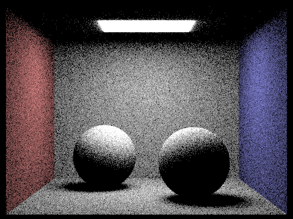
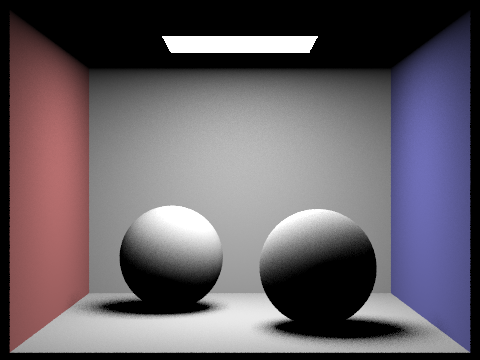
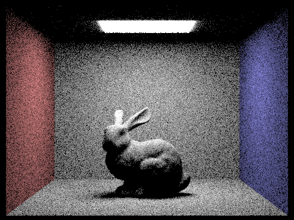
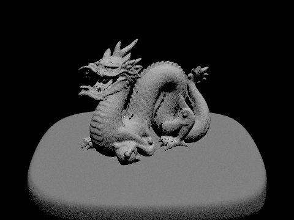
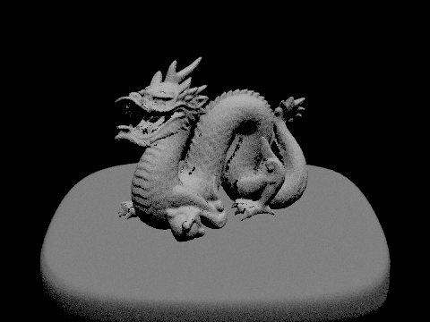
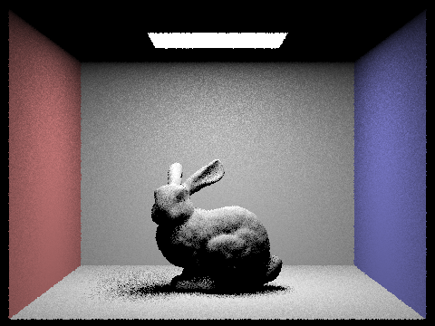

A conceptual overview of ray tracing
In this task, we rendered scenes with direct lighting. Direct lighting is either light rays traveling directly into the camera (zero-bounce lighting), or light rays hitting an object and then bouncing off directly into the camera (one-bounce lighting). This is enough to capture shadows and a large part of the actual lighting in the scene, but doesn't represent the full story where light bounces off of objects multiple times before reaching our eyes/a camera's lens, which will be implemented in Task 4.
Ray tracing is usually done backwards, when compared to how light actually moves in the real world. Like described in Task 1, we generate rays coming out of the camera into the scene (through a specific pixel we're sampling), and then see if we intersect an object in the scene. If we do, we can receive light in two different ways:
- The ray is intersecting a light source. In this case, we can call a function
get_emission()to figure out how much light would be coming in from that direction, and add that to the total light sampled. - Light is reaching the object at the point the ray intersected it, and bouncing off along the ray towards the camera. Explictly calculating how much light comes into the camera in this way is quite hard, but there are a couple of strategies for estimating it using Monte Carlo estimators.
The Monte Carlo estimator for the reflection equation
Like we said before, calculating the actual light received from every possible direction is very difficult, and extremely computationally expensive. It involves computing an integral over the entire hemisphere of vectors coming out of the point of reflection which depends heavily on the exact position of every object in the scene: completely impractical to do for every single ray we cast. So, instead, we could try sampling several vectors $\omega_j$ from this hemisphere and average their contribution to the light together to estimate what the total light reflected should be. The exact amount of light contributed depends on three factors. The first factor is how much light is actually coming in from that direction and hitting our point, which we'll write as the incoming light $L_i(\mathrm{p}, \omega_j)$, where $\mathrm{p}$ is the point where the light is hitting and $\omega_j$ is the direction the light is coming from. Then, we have to multiply by the reflectance of the object we're bouncing off of, which is determined by the object itself, and both the incoming ray $\omega_j$ and the outgoing ray $\omega_r$. We'll call this reflectance $f_r(\mathrm{p}, \omega_j \rightarrow \omega_r)$. Finally, we have to take into account some trigonometry: if you consider a thin beam of light coming in perfectly normal to the surface, it will cover exactly the same area as its width. However, if the light comes in at an angle almost parallel to the surface, its light will be spread out a lot more across the whole surface. Therefore, we have to scale light coming in from an angle away from the normal appropriately, and the appropriate factor turns out to be $\cos \theta_j$, where $\theta_j$ is the angle of $\omega_j$ with the normal vector to the surface at $\mathrm{p}$.
So, we've got our method for estimating the one-bounce radiance, right? Well, almost. We actually have to normalize their contribution by the probability (technically, the probability density, since the probability is always $0$ of selecting a given point out of a continuum) of sampling the point that we sampled (which changes based on how exactly we sample our points), as otherwise directions with light sources that are less likely to be chosen are less likely to contribute their light values and we could end up with a skewed result. So, with that last addition, we put everything together to get this equation:
$$\frac{1}{N} \sum_{j=1}^N \frac{f_r(\mathrm{p}, \omega_j \rightarrow \omega_r) L_i(\mathrm{p}, \omega_j) \cos \theta_j}{p(\omega_j)}$$
where $N$ is the number of times we sample per ray.
Now, the only thing left to do is to pick our sampling strategy over this hemisphere of possibilities!
Direct lighting by hemisphere sampling
The naive strategy is to randomly sample in all possible reflection directions (essentially, the unit hemisphere of points where the dot product of the normal vector to the surface we intersect with the vector pointing towards the point is greater than $0$). Then, if a sampled ray intersects a light source, we can use the Monte Carlo estimator to tell us how much light to add to the total light coming out of that point, and add it to our total light coming in. If we hit something else, since we're not considering multi-bounce radiance, we just say that we receive no light from that direction and move on to the next sample. We sample $N$ times for every ray, so once we finish sampling we divide our total light by $N$ and return it. Pretty straightforward, no?
Unfortunately, this naive strategy runs into some issues. Usually, scenes don't have that many lights in them, so most samples aren't really telling us much besides "there's no light this way," which is kind of a waste of computation and results in our sample rate being effectively much lower than it actually is. This lowered "effective sampling rate" causes rendered images to be very noisy unless we do a LOT of samples per pixel, which is computationally expensive.
Direct lighting by importance sampling on lights
So, instead, we can improve our sampling strategy by only sampling directions where it's even possible for light to come in.
How? Instead of sampling random points on a sphere, we can iterate over each light and sample directions only from points on the light itself.
This way, it's much more likely the ray will actually intersect the light source: we don't have any rays that miss the scene entirely, for example, and the only way a ray wouldn't intersect the light source is if we intersect something else first.
However, we do now have two different cases to handle: point lights and area lights.
When doing uniform hemisphere sampling, we have a probability of $0$ of hitting a point light, so they never contributed any illumination to the scene.
But for light sampling, we need to actually compute their contribution to the radiance at a point.
For a point light, there's no point (well there is a point light but you know what I mean) in sampling multiple times; we get the same ray every single time, so we might as well just sample once and see if the light ray makes it to the point of intersection or not. This saves us some computational time compared to hemisphere sampling (assuming that hemisphere sampling samples the same number of times per light per pixel), with no cost in quality.
For an area light, on the other hand, we sample uniformly from the surface of the light, and normalize by a custom probability density function provided by the light itself when adding to our average.
Comparison of generated images
These images were generated with 16 samples per pixel, and 8 samples per light, at a 480x360 pixel resolution. The left image is with uniform hemisphere sampling, and the right is with importance sampling.
 

We can see that images generated by hemisphere sampling generally have a lot of noise all over the picture, which comes from most of the samples not reaching a light source and being basically completely uninformative. On the other hand, importance sampling renders are much smoother and nicer.
 

The dragon scene only has one point light, so uniform hemisphere sampling never finds it and so the whole scene is dark in the render. Comparatively, sampling by importance sampling on lights allows the light to actually illuminate the scene and render an image of the dragon. Unless you like black, it's pretty clear importance sampling wins here.
Reduction in noise in soft shadows
When we sample by importance sampling, sometimes only one sample is necessary to find out what the light level is at a given pixel. For a specific pixel, if a ray is guaranteed to make it from ANY point on the light source from any point that a camera ray within the pixel intersects, then no matter how many samples you take, the color of the pixel will be the same (for that specific pixel sample, at least). Similarly, if the ray is guaranteed NOT to make it to the light source, sampling more is equally useless. (We will take advantage of this in Task 5 using adaptive sampling to reduce sampling in regions that don't need it as much.) So, the only case where additional samples are important is where some of the rays can make it back to the light source from the camera ray intersection point, but others can't. This happens at the edges of shadows; when the sample rate per light is low, we can have shadow edges that look very noisy and harsh, but increasing the sample rate per light will soften those shadows and remove the noise. Here's an example, showing the bunny from earlier. We have 1 sample per pixel for all images, and a resolution of 480x360, but the sample rate per light ranges over 1,4,16,64 as we go left to right and top to bottom:

In these first two images, the shadows on the ground are extremely noisy. However, in the first image, the shadows on the ears and eye... sockets... are also quite noisy, whereas 4 samples helped smooth out those shadows substantially.
At 16 samples per light, the noise in the ground shadow has been mostly smoothed out, although there are still a decent number of gray specks in there, and the inner shadow is still a little harsh. The ears and eyes have smoothed out completely, though. Once we've gotten to 64 samples per light, the gray specks have faded a little more, and the inner shadow has a nice gradient and softness to it. There is still some noise, though; this could probably be improved by taking more samples per pixel, since the complex geometry of the ears and head may be leading to large changes in how much light gets through to specific points.
Conclusion
Importance sampling generally reduces noise substantially in the rendered image, by virtue of only sampling points that actually matter to the lighting. This in essence gives a lot more information to the pixel about what color it should be, and prevents the noise that is generated by high variance due to effectively low sample rates. Recreating the same quality of image that importance sampling can create with hemisphere sampling would require a much higher sampling rate, which generally would require a lot more computation. Hemisphere sampling is much easier to implement, though, since it doesn't require giving each light its own unique sampling function and in general there's a lot less cases to handle. So, if you have the time, importance sampling is basically a direct upgrade to hemisphere sampling, but it's a lot more work to implement.